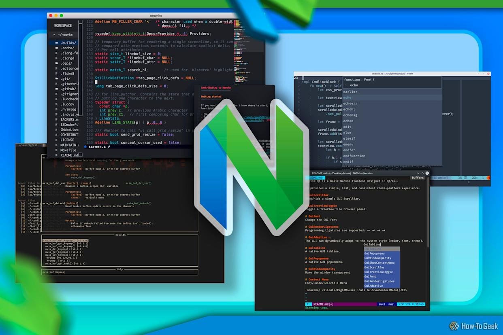

Neovim Config
- Designed a minimal Neovim setup using only 1–2 plugins for simplicity and performance.
- Built-in terminal, so you don't have to switch windows!
- Configured key mappings, autocommands, and custom modules to streamline features and cut unnecessary bloat.